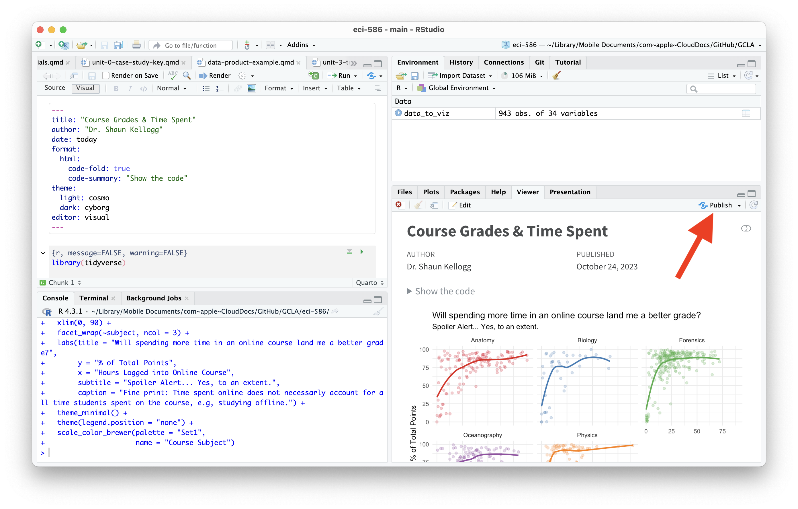
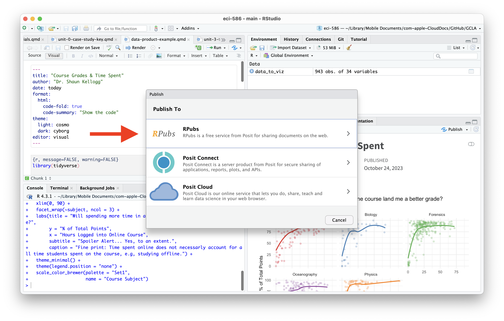
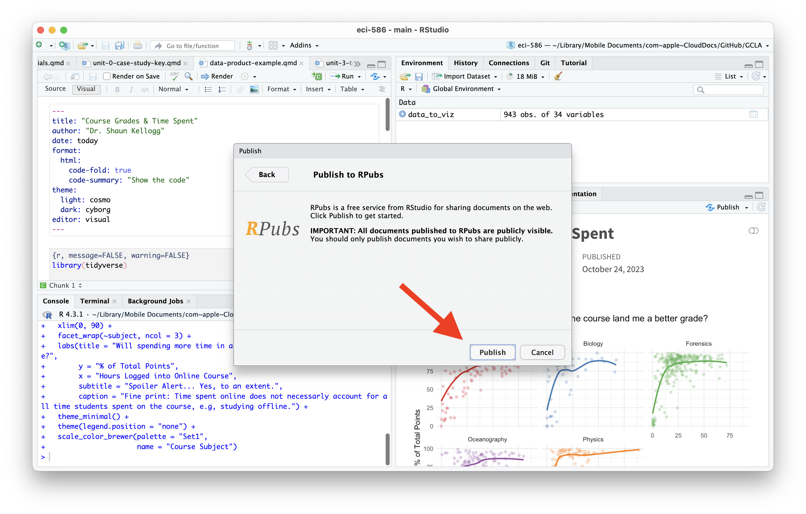
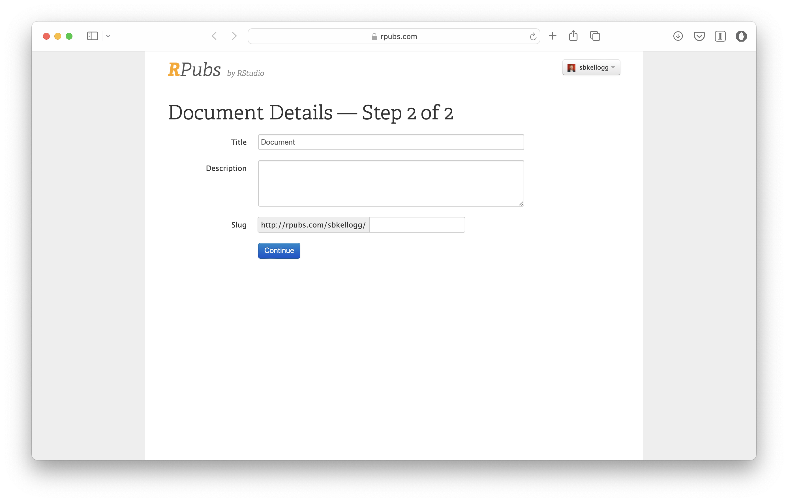
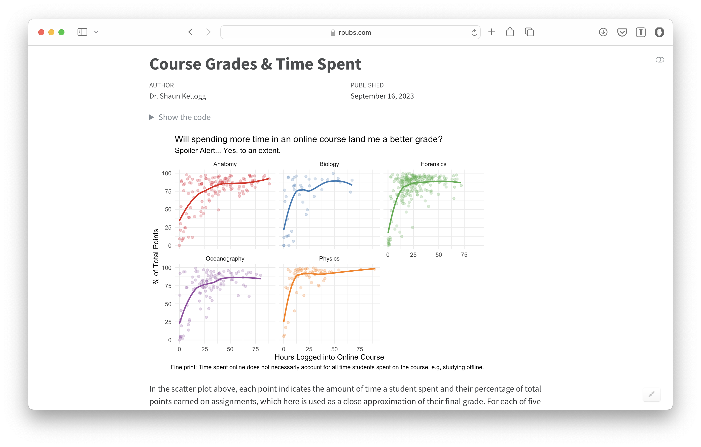

Unit 3 Tutorials: Tidy Data & Dashboards
ECI 586 Intro to Learning Analytics
Assignment
For Unit 3 we’ll take a deep dive into Quarto, a new open-source scientific and technical publishing system and is the next generation of R Markdown. Quarto can be used to create dynamic content with Python, R, Julia, and Observable and to publish reproducible, production quality articles, presentations, websites, blogs, and books in HTML, PDF, MS Word, ePub, and more. This week, you’ll work through three tutorials covering the basics of creating and publishing documents with Quarto and use Quarto to create and publish your first “data product.”
Primers
This week you have two required primers to complete before we dig into our Unit 3 case study:
Hello Quarto: In this tutorial, you’ll review the Quarto basics of editing code and markdown and previewing the rendered document in the Viewer tab as you work.
Computations: In this tutorial you’ll learn how to author fully reproducible computational documents with Quarto in RStudio.
Authoring: In the final tutorial, you’ll learn how to author Quarto document, how to add components like table of contents, equations, citations, etc., and the various document formats you can produce with the same source code.
I have included the accompanying Quarto files for each tutorial in the Unit 3 Week 9 - Tutorials workspace on Posit Cloud.
Assessment
The assignment for this week is worth a total of 6 points. The first half of your grade will be for creating and publishing a simple data product consisting of a single data visualizations or table accompanied by some narrative text. The second half of your assignment grade is for providing some brief feedback on the data products of your peers.
Publish a Data Product (3 points)
As highlighted in Learning Analytics Goes to School, the Communicate step in the data-intensive research workflow consists of sharing the results of analysis with wider audience. Krumm et al. (2018) outlined the following 3-step process for communicating with education stakeholders what you have learned through analysis:
Select. Communicating what one has learned involves selecting among those analyses that are most important and most useful to an intended audience, as well as selecting a form for displaying that information, such as a graph or table in static or interactive form (i.e. a “data product”) and a format for communicating your results (e.g. a presentation, document, or dashboard).
Polish. After creating initial versions of data products, research teams often spend time refining or polishing them, by adding or editing titles, labels, and notations and by working with colors and shapes to highlight key points.
Narrate. Writing a narrative to accompany the data products involves, at a minimum, pairing a data product with its related research question, describing how best to interpret the data product, and explaining the ways in which the data product helps answer the research question.
This week, you will create a new Quarto file that you will use to make and share your own data product on RPubs. There are two data sets located in your data folder that you are welcome to use. The course-data.csv file contains student demographics, survey responses, final grades and other course information that we have worked with previously. The liwc-data.csv file contains summary statistics for discussion board responses for these same students, including the number of posts per students and the emotional tone (e.g., positive or negative sentiment) and other composite scores calculated using the used the Linguistic Inquiry and Word Count (LIWC) lexicons (see page 3 overview of categories). You are also welcome to join these datasets together for your data product or to use any other datasets that you find online or that you may be using for your own work.
As an example of what your final data product may look like, see the following two examples I’ve published on RPubs:
Single Visualization - http://rpubs.com/sbkellogg/grades-time
Basic Dashboard - https://rpubs.com/sbkellogg/dashboard-example
Note that the dashboard example was made using Flexdashboard, an R package for making simple data dashboards. Although Dashboard publishing options are eventually coming Quarto, the {flexdashboard} package uses R Markdown, which will gradually be replaced by Quarto. You are more than welcome to give it a try this week, but only if you’re feeling a little ambitions and are seeking a challenge.
Next, click the “Render” button in the toolbar at the top of your document to render this document to a HTML web page, just one of the many publishing formats you can create with Quarto documents.
After you are satisfied with your data product, remember to “render” your Quarto file by clicking the  “Render” button in the menu bar at that the top of this file to render your Quarto document to a HTML web page, just one of the many publishing formats you can create with Quarto documents. Also, be sure that the option to “Preview in the Viewer Pane” is selected. This option can be found in the menu with the gear icon right next to the Render button.
“Render” button in the menu bar at that the top of this file to render your Quarto document to a HTML web page, just one of the many publishing formats you can create with Quarto documents. Also, be sure that the option to “Preview in the Viewer Pane” is selected. This option can be found in the menu with the gear icon right next to the Render button.
Recall that rendering your Quarto file will do two things; it will:
check through all your code for any errors; and,
create a file in your directory that you can use to share you work through Posit Cloud, RPubs , GitHub Pages, Quarto Pub, or other methods.
Next, I recommend using RPubs to publish your final rendered .html file to the web. If you have not already done so, please create a free RPubs account prior to completing the following steps:
- Click the Publish button in your View pane.

- Click the RPubs Publish To option.

- Click the Publish button.

- Add the required information and click continue.

- Congrats! Your data product is now published to the web!

You are also welcome to use another services to share you work such as Posit Cloud, GitHub Pages, Quarto Pub, or other methods. RPubs, however, is by far the simplest.
Provide Peer Feedback (3 points)
When you are finished publishing your data product online, create a new post in the Week 9 forum to share your data product. Be sure to include the link to your data product in your forum post for others to access. An example post has been provided.
Finally, provide some brief but constructive feedback (2-3 sentences) on the data products of 3 of your peers (1 point each). Your feedback should include one thing you liked about their data product and why as well as one suggestion for potential improvement or extension of the analysis.
If you have questions about the tutorials or data product, I encourage you to reply to the Questions and Troubleshooting post, especially if others might benefit from the response to question. You are also more than welcome to respond to the questions posted by your peers. However, I do ask that you try work through the assignment independently before reaching out for support.